참고자료 모음
이 수업이 어디에서 나왔는지, 무엇을 더 보면 되는지 한자리에 모았습니다. 각 자료가 몇 차시에 어떻게 쓰이는지도 함께 적었습니다.
먼저 읽을 것
자료는 세 갈래입니다. 바탕은 이 수업의 뿌리가 된 곳이고, 수업 자료는 차시에서 실제로 쓰는 것이며, 기준은 판단이 갈릴 때 근거로 삼는 문서입니다.
링크는 자주 바뀝니다. 수업 하루 전에 한 번 열어 봅니다.
각 누리집의 첫 화면을 갈무리한 것입니다. 저작권은 해당 기관에 있으며, 수업 자료를 찾아가도록 돕는 교육 목적으로만 싣습니다. 그림마다 출처를 적었고, 누르면 원래 누리집으로 갑니다. 자료를 쓸 때에는 기관 이름과 주소를 함께 밝힙니다.
바탕 · 이 수업이 어디에서 왔나
인간중심 사고와 휴먼스킬이라는 말이 어디에서 나왔는지 보여 주는 곳이다.
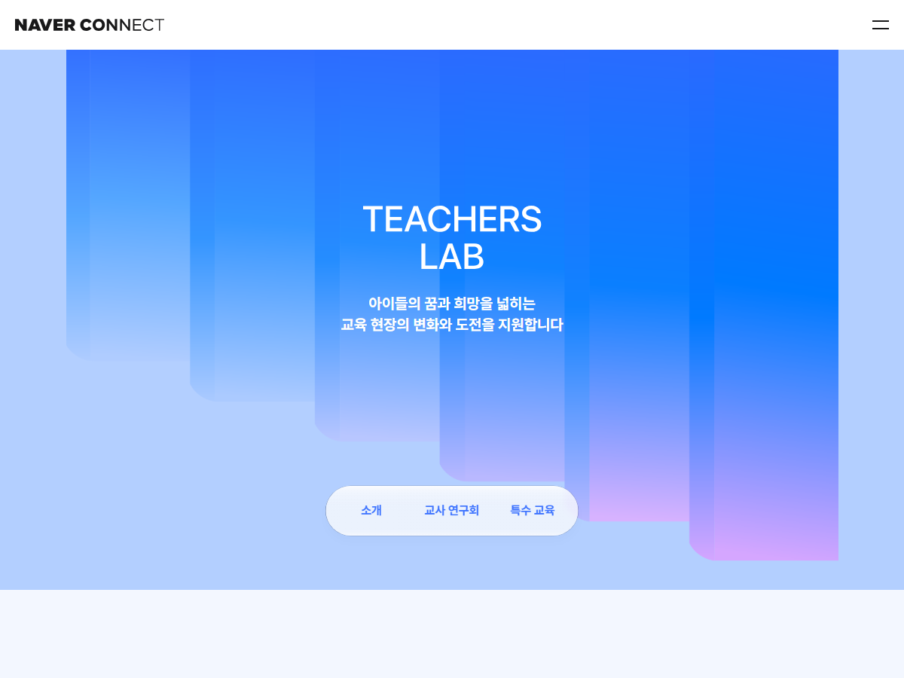
네이버 커넥트재단
티처스랩
네이버 커넥트재단이 교사를 지원하는 사업의 공식 소개 쪽이다. 교실에서 찾은 문제를 교사가 함께 수업으로 푸는 연구회를 운영한다. 우리 연구회도 여기에서 나왔다.
연수와 학부모 안내에서 이 수업의 배경을 설명할 때 첫 화면으로 보여 준다.
https://connect.or.kr/teachers
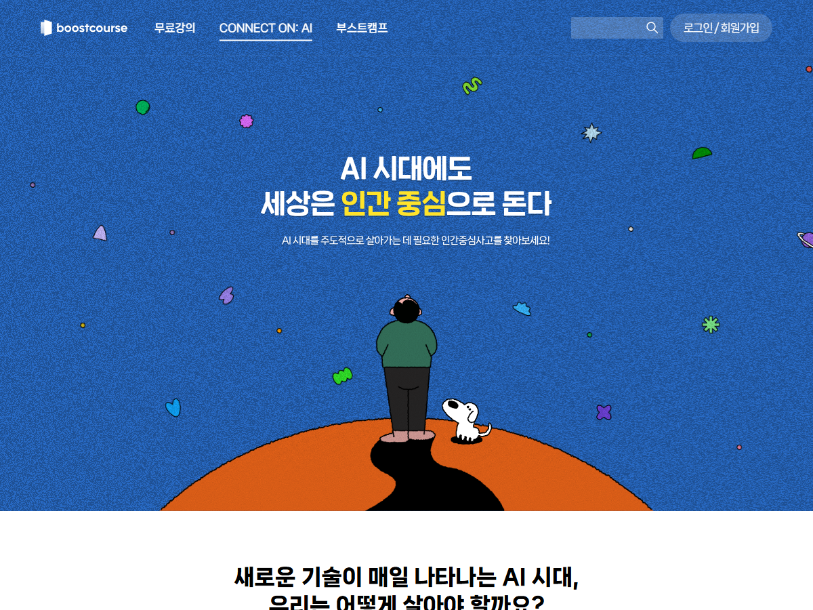
네이버 커넥트재단 부스트코스
CONNECT ON: AI · 인간중심 사고 학습
AI 시대에 필요한 인간중심 사고를 무료로 배우는 곳이다. 중심잡기·융합하기·성찰하기 세 축 아래 12가지 역량을 두고, AI 기본 개념부터 생성형 AI, AI for Good 까지 열 가지 주제 영상을 준다.
이 수업의 휴먼스킬 12역량이 여기에서 왔다. 교사가 먼저 본다. AI for Good 편은 11차시 배경으로 교사가 읽고 학생 말로 바꾸어 전한다.
쓰이는 차시 11차시
https://www.boostcourse.org/connecton
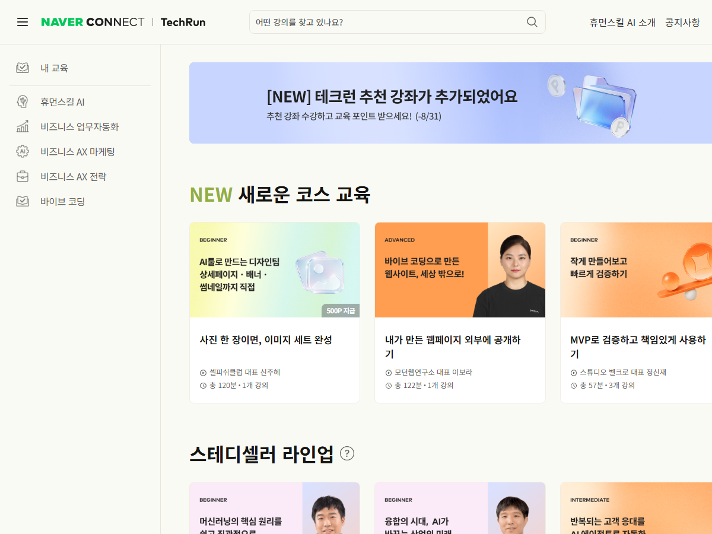
네이버 커넥트재단
테크런
커넥트재단의 무료 라이브 학습 플랫폼이다. 휴먼스킬 AI 소개 링크가 CONNECT ON: AI 로 이어진다.
더 배우고 싶어 하는 학생과 학부모에게 안내한다.
https://techrun.connect.or.kr/
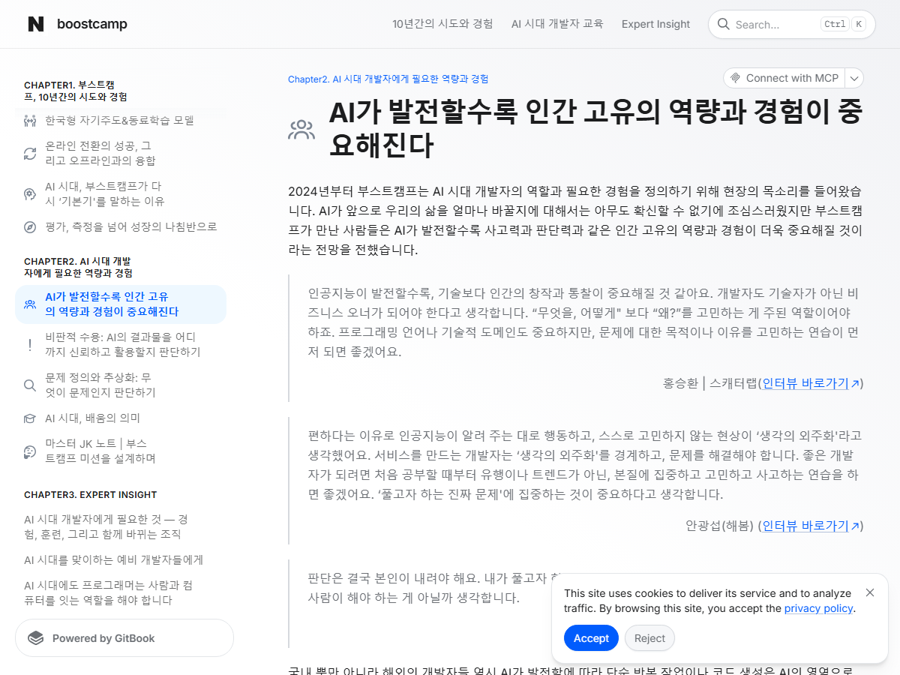
네이버 커넥트재단 부스트캠프
AI가 발전할수록 인간 고유의 역량과 경험이 중요해진다
기술이 좋아질수록 사람은 왜를 묻고 결과를 검증하는 자리로 옮겨 간다는 글이다. 문제를 정의하는 힘과 결과를 믿을 수 있는지 재는 힘을 핵심으로 꼽는다.
AI 가 다 해 주는데 왜 배우냐는 물음이 나올 때 교사가 근거로 읽는다.
https://boostcamp.connect.or.kr/insight/ai/human-centric
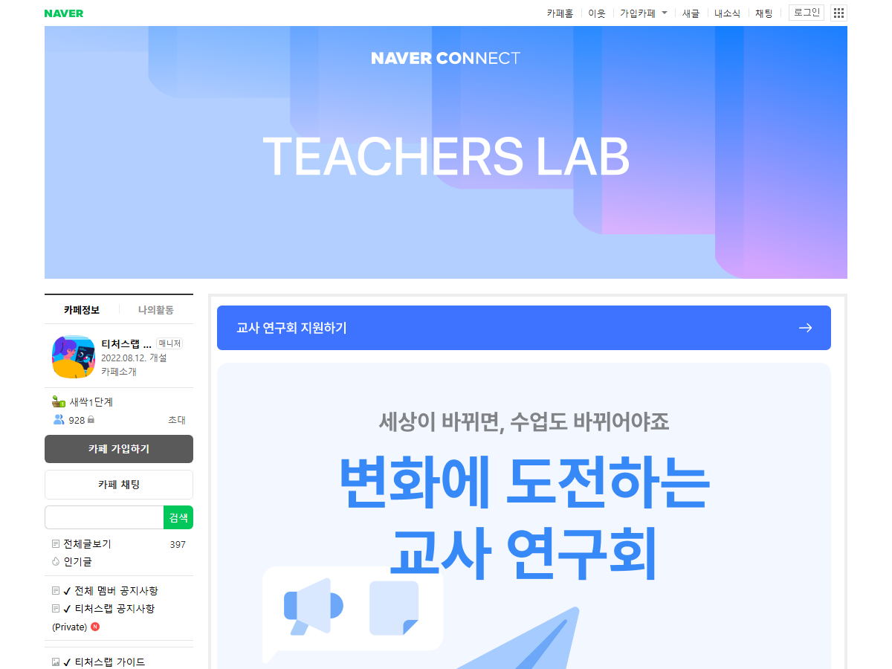
네이버 커넥트재단
티처스랩 네이버 카페
티처스랩 교사연구회가 모이는 네이버 카페다. 2022년에 열렸고 회원이 900명을 넘는다. 글을 읽으려면 카페에 가입해야 한다.
우리 연구회 자료를 나누고 다른 연구회가 만든 수업을 찾아본다.
https://cafe.naver.com/teacherslab
수업 자료 · 차시에서 실제로 쓰는 것
차시 페이지와 웹앱 사용 안내에도 그 차시 것만 골라 실려 있다.
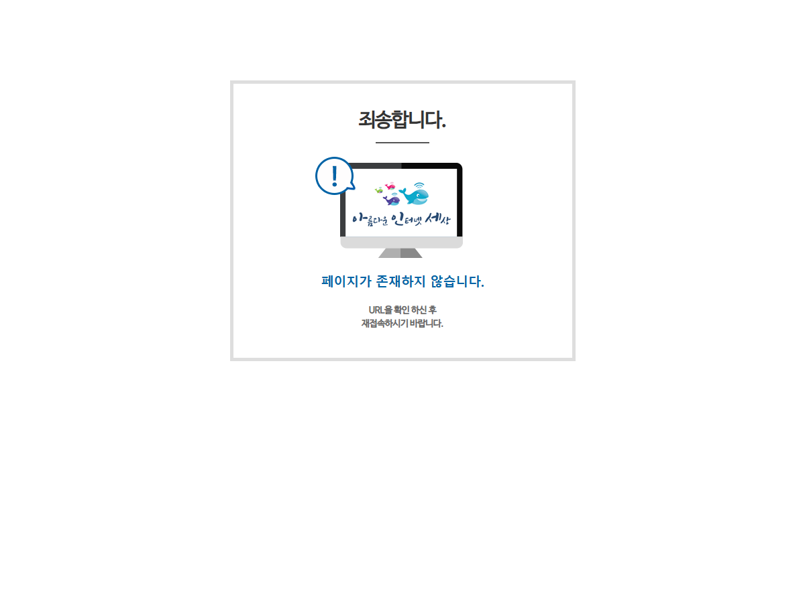
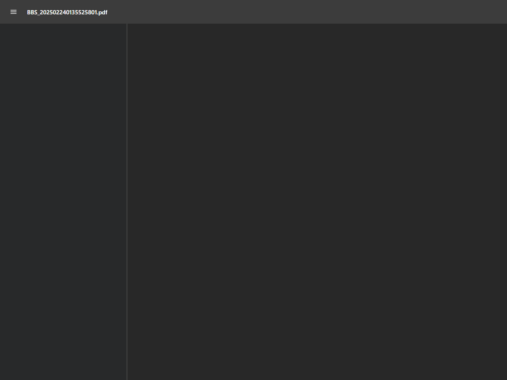
경기도교육청
학생용 가이드라인 생성형 인공지능 활용교육
초등학생 편이 61쪽부터 시작한다. 사실 확인 3단계, 맡겨도 되는 일과 안 되는 일, 학생과 교사와 부모의 약속이 그림과 함께 실려 있다.
2차시 확인 3단계(72쪽), 5차시 분류 기준(71쪽), 7차시 약속 본보기(85쪽)로 쓴다.
https://www.goe.go.kr/resource/old/BBSMSTR_000000000126/BBS_202502240135525801.pdf
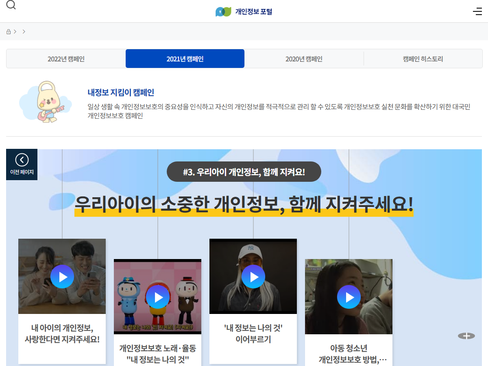
개인정보보호위원회
어린이·청소년 개인정보 보호 캠페인
어린이가 볼 수 있는 개인정보 보호 영상과 교육자료를 모아 둔 곳이다.
4차시 도입에서 영상을 보여 주고 챗봇에 넣으면 안 되는 정보를 목록으로 만든다.
쓰이는 차시 4차시
https://www.privacy.go.kr/front/campaign/campaignChild.do
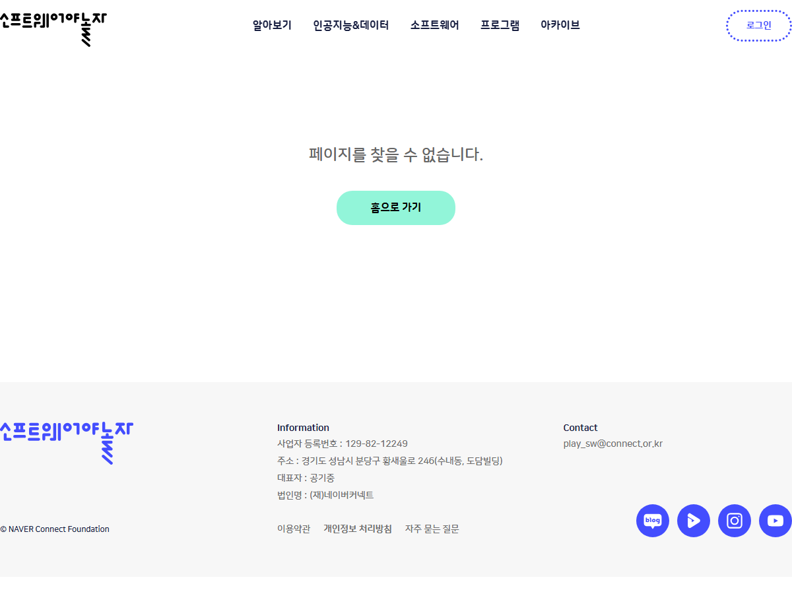
네이버 커넥트재단
소프트웨어야 놀자 · Hello AI World
기계학습과 지도학습을 2분 안팎으로 설명하는 무료 영상이 있다.
1차시 도입과 이름표 붙이기 직전에 한 편씩 보여 준다.
쓰이는 차시 1차시
https://www.playsw.or.kr/artificial/main
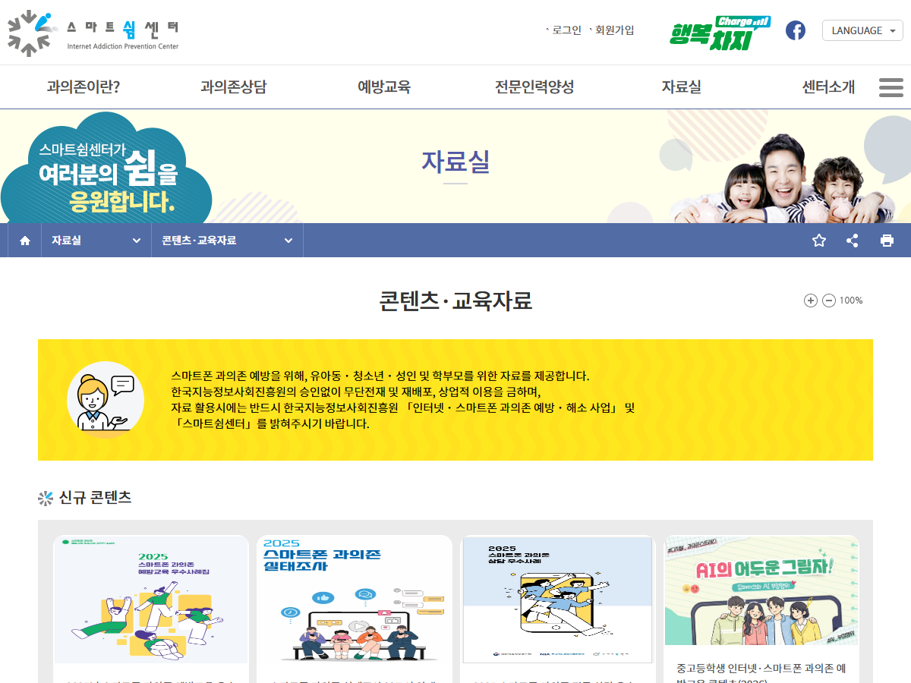
한국지능정보사회진흥원
스마트쉼센터 교육자료실
초등 고학년 스마트폰 과의존 예방 영상과 교사용 지도안, 활동지가 있다.
10차시에서 영상 한 편을 보고 내 화면 시간을 점검한다.
쓰이는 차시 10차시
https://www.iapc.or.kr/mediaList.do?idx=28&type=A1
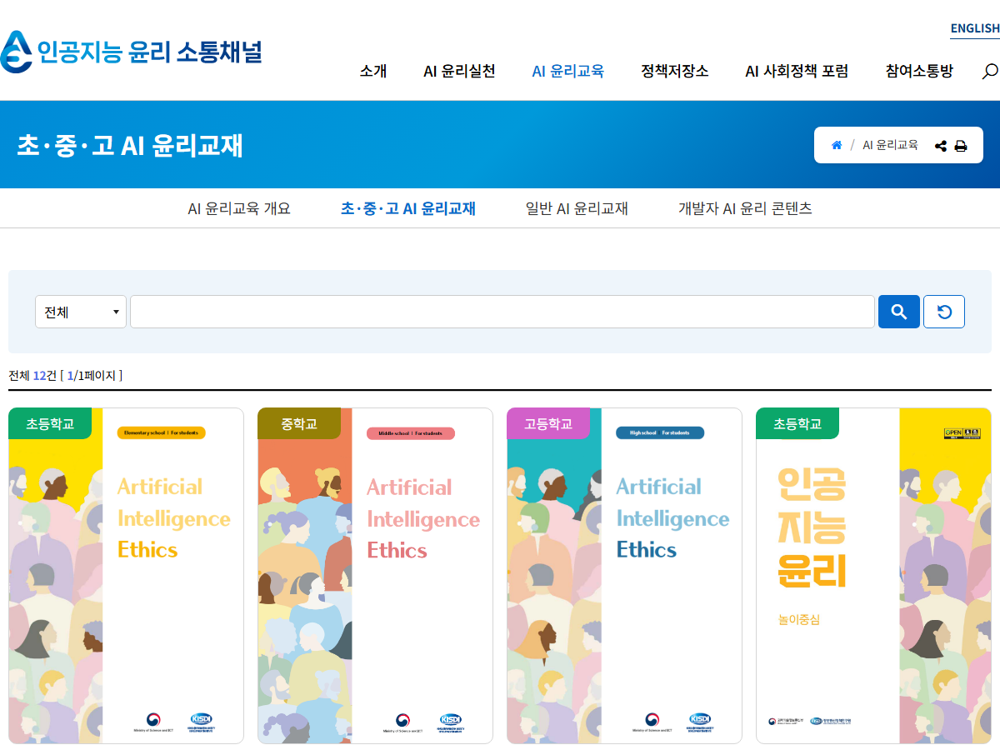
과학기술정보통신부 · 정보통신정책연구원
초·중·고 AI 윤리교재
초등학교용은 놀이 중심으로 되어 있다. 학생용과 교사용, 수업자료를 함께 받는다.
3차시 다양성 존중 단원의 놀이 활동을 그대로 가져온다.
쓰이는 차시 3차시
https://ai.kisdi.re.kr/aieth/bbs/B0000082/list.do?menuNo=400011
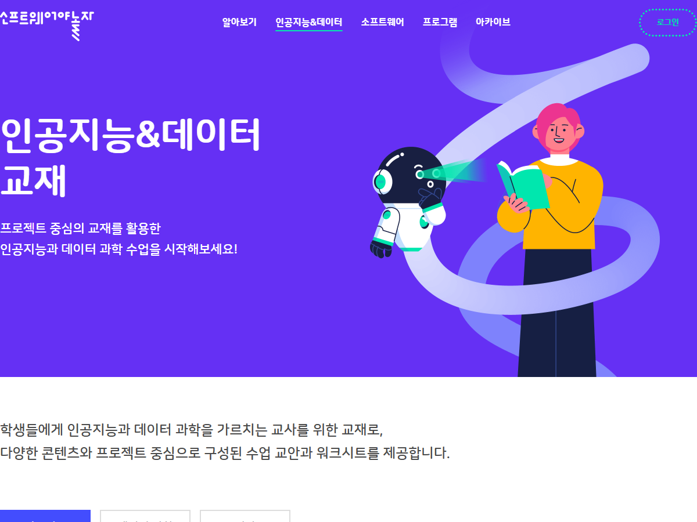
네이버 커넥트재단
인공지능과 데이터 교재
초등용 AI 교재를 무료로 받는 곳이다. 쓰레기 문제 해결하기처럼 사회문제를 데이터와 AI 로 푸는 챕터가 있다.
11차시에서 프로젝트 주제를 정하기 전에 사례로 보여 준다.
쓰이는 차시 11차시
https://www.playsw.or.kr/artificial/textbook
환경부 국가환경교육센터
국가환경교육센터 교육자료
초등 5~6학년 탄소중립 교재다. 교사용과 학생용, 차시별 PPT 가 함께 있다.
11차시에서 우리 학교에서 고칠 수 있는 문제를 찾을 때 쓴다.
쓰이는 차시 11차시
https://keep.go.kr/front/cntnts/cntntsDetailForm.html?cntntsid=12584
기준 · 판단이 갈릴 때 보는 문서
학부모나 관리자에게 근거를 대야 할 때 이 문서들을 인용한다.
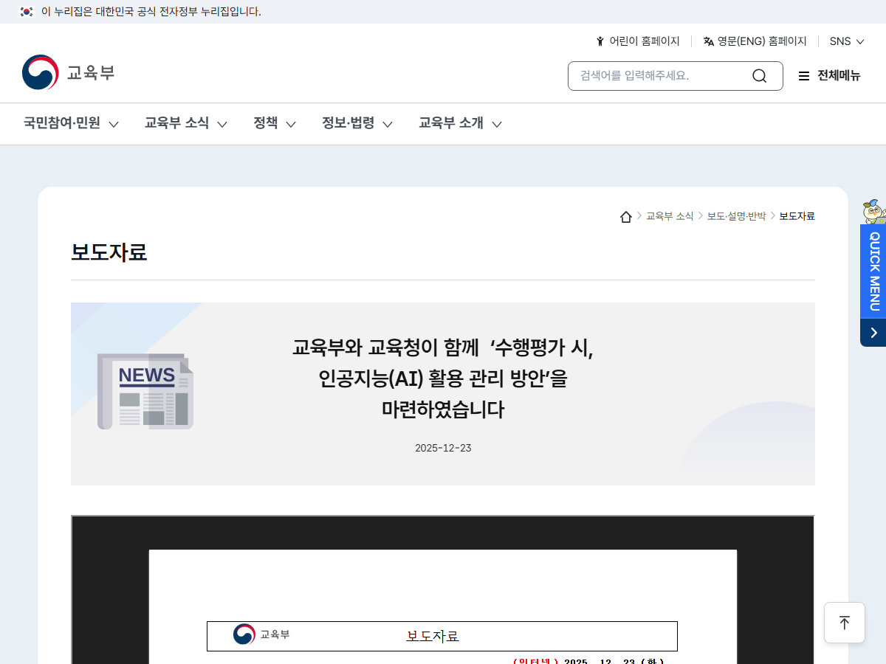
교육부
수행평가 시 인공지능 활용 관리 방안
수행평가에서 AI 를 쓸 때 종류와 활용 방식, 출처를 함께 적게 한 국가 기준이다.
8차시에서 우리 반 표기 양식을 정할 때 근거로 보여 준다.
쓰이는 차시 8차시
https://www.moe.go.kr/boardCnts/viewRenew.do?boardID=294&boardSeq=104984&lev=0&m=020402
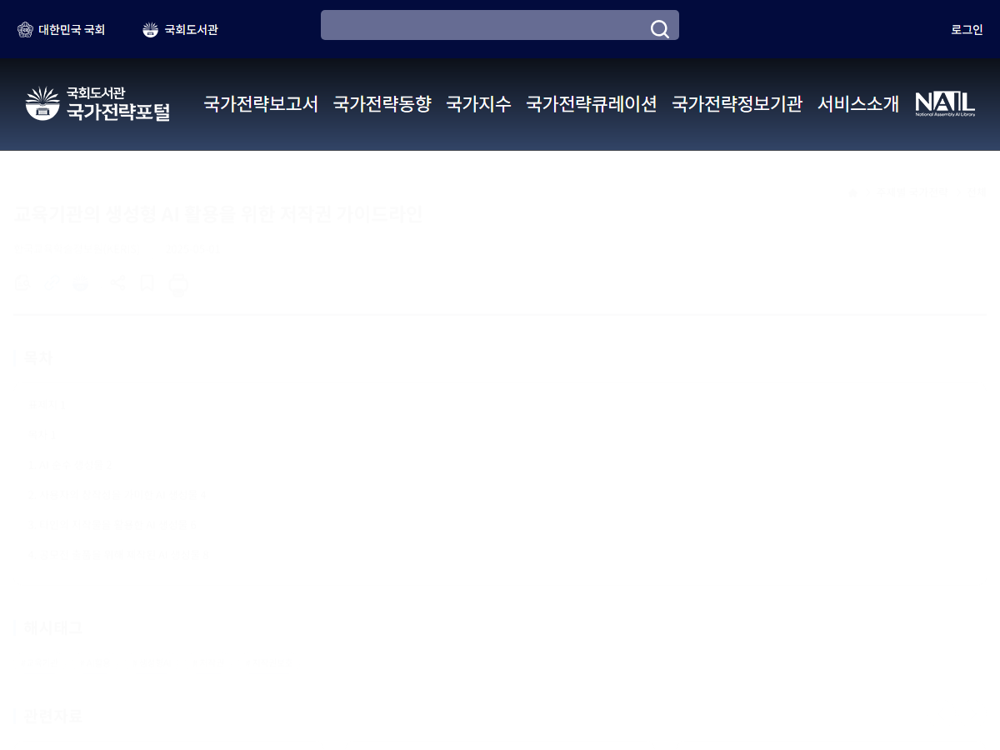
한국교육학술정보원
교육기관의 생성형 AI 활용을 위한 저작권 가이드라인
AI 가 만든 것을 수업과 공모전에 쓸 때의 기준과 자주 묻는 질문이 정리되어 있다.
8차시 표기와 저작권 질문이 나올 때 교사가 근거를 갖고 답한다.
쓰이는 차시 8차시
https://nsp.nanet.go.kr/plan/subject/detail.do?newReportChk=list&nationalPlanControlNo=PLAN0000055801
차시별로 어디에 들어 있나
| 차시 | 주제 | 쓰는 자료 | 수업 어디에서 |
|---|---|---|---|
| 1차시 | AI는 어떻게 똑똑해질까 | 머신러닝(기계학습) · Hello AI World 소프트웨어야 놀자(네이버 커넥트재단) 지도학습 · Hello AI World 소프트웨어야 놀자(네이버 커넥트재단) | 도입에서 2분만 보여 주고 AI가 데이터에서 규칙을 스스로 찾는다는 것을 확인한다. 이름표 붙이기 활동 직전에 보여 주고 정답이 붙은 데이터가 왜 필요한지 이야기한다. |
| 2차시 | AI도 틀린다, 환각과 검증 | 학생용 가이드라인 생성형 인공지능 활용교육 (72쪽 답이 맞는지 확인하기) 경기도교육청 팩트체크 사실 혹은 거짓 디지털윤리.kr (방송미디어통신위원회·한국지능정보사회진흥원) | 72쪽의 확인 3단계(교과서 비교, 어른께 묻기, 함께 찾아보기)를 활동지 기준으로 그대로 쓴다. 팩트체커 활동지를 내려받아 AI 답변 검증 놀이로 바꾸어 쓴다. |
| 3차시 | AI도 편견을 가질까 | 실습형 인공지능 윤리교육 프로그램 디지털윤리.kr (방송미디어통신위원회·한국지능정보사회진흥원) 초등학교 인공지능 윤리 교재 (놀이중심) 과학기술정보통신부·정보통신정책연구원 | 함께 주는 데이터 세트로 편향된 데이터가 어떤 결과를 만드는지 실습한다. 학생용과 교사용을 함께 받아 다양성 존중 단원의 놀이 활동을 진행한다. |
| 4차시 | 내 정보는 안전할까 | 어린이·청소년 개인정보 보호 캠페인 개인정보보호위원회 초등 디지털시민의 개인정보와 평판 디지털윤리.kr (방송미디어통신위원회·한국지능정보사회진흥원) | 도입에서 어린이 개인정보 영상을 보여 주고 챗봇에 넣으면 안 되는 정보를 목록으로 만든다. 학생용 활동지로 한 번 올린 정보가 왜 되돌리기 어려운지 정리한다. |
| 5차시 | 보조자일까, 대행자일까 | 학생용 가이드라인 생성형 인공지능 활용교육 (71쪽 적당히 사용하기) 경기도교육청 | 71쪽의 도움받아도 되는 경우와 안 되는 경우를 칠판에 옮겨 적고 두 칸으로 나눈다. |
| 6차시 | AI 신호등 판단 놀이 | 초등 짧게 끝내는 생성형 AI 윤리 수업 디지털윤리.kr (방송미디어통신위원회·한국지능정보사회진흥원) | 짧은 수업용 PPT를 잘라 신호등 판정 놀이의 상황 카드로 쓴다. |
| 7차시 | 우리 반 AI 약속 만들기 | 학생용 가이드라인 생성형 인공지능 활용교육 (85쪽 우리 모두의 약속) 경기도교육청 초등학교 교사를 위한 디지털 시민교육 활용 가이드북 디지털윤리.kr (방송미디어통신위원회·한국지능정보사회진흥원) | 85쪽 학생·교사·부모 약속을 본보기로 보여 주고 우리 반 문장으로 고쳐 쓰게 한다. 교사가 미리 읽고 약속 만들기 활동을 디지털시민역량에 맞추어 배치한다. |
| 8차시 | 우리 반 AI 약속 선포식 | 수행평가 시 인공지능 활용 관리 방안 교육부 교육기관의 생성형 AI 활용을 위한 저작권 가이드라인 한국교육학술정보원 | AI 종류와 활용 방식, 출처를 함께 적는 국가 기준을 보여 주고 우리 반 표기 양식을 정한다. 교사가 FAQ 부분만 읽고 공모전 출품과 출처 표기 질문에 근거를 갖고 답한다. |
| 9차시 | 생각을 먼저, AI는 그다음 | 초등 고학년 인공지능과 생성형 AI 윤리 디지털윤리.kr (방송미디어통신위원회·한국지능정보사회진흥원) | 영상과 활동지를 이어 AI 결과를 그대로 쓰지 않고 내 생각을 먼저 세우는 순서를 익힌다. |
| 10차시 | AI에 기대도 괜찮을까 | 초등 고학년 스마트폰 과의존 예방 콘텐츠 스마트쉼센터(한국지능정보사회진흥원) 스마트쉼센터 교육자료 자료실 스마트쉼센터(한국지능정보사회진흥원) | 10분 안팎 영상 한 편만 보여 주고 함께 주는 활동지로 내 화면 시간을 점검한다. 최신판 초등 예방교육 콘텐츠를 확인해 학급 수준에 맞는 영상으로 바꾸어 쓴다. |
| 11차시 | AI for Good 프로젝트(1) | 학생주도로 만들어 가는 초등 융합프로젝트수업 실천사례 경기도교육청 인공지능과 데이터 교재 · 소프트웨어야 놀자 네이버 커넥트재단 초등 5~6 탄소중립 학교 만들기 기후위기 대응 교재 국가환경교육센터(환경부) | 5학년 행복한 공감 히어로 되기 사례를 설계 틀로 삼아 우리 마을 문제를 고르고 해결 방법을 계획한다. 인공지능으로 쓰레기 문제 해결하기 같은 초등 챕터를 보여 주고 학생이 프로젝트 주제를 정하게 한다. 탄소중립 실천하기 부분을 발췌해 우리 학교에서 고칠 수 있는 문제를 찾고 AI를 어디에 붙일지 설계한다. |
| 12차시 | AI for Good 프로젝트(2) | 초등 자기평가, 정의적 능력 평가 도구 예시 자료 경기도교육청 초등 학습으로의 평가 이해하기 경기도교육청 | 5·6학년 사회과 발표 자기평가 문항을 가져와 발표 뒤 생각이 어떻게 달라졌는지 적는 성찰지로 쓴다. 과정을 중시하는 평가 항목을 읽고 발표 결과가 아니라 프로젝트 전 과정을 보는 기준과 피드백 문구를 미리 만든다. |
차시 페이지와 웹앱 사용 안내 페이지에도 같은 자료가 그 차시 것만 골라 실려 있습니다.